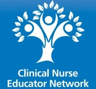

CNENet is a professional network for clinical nurse and nursing associate educators working across the UK.
We create collaborative spaces where nurse and nurse associate clinical educators can build connections, offer peer support, and share best practice and resources.
We also advocate for clinical educators in order to strengthen the quality of clinical education within healthcare settings.
We maintain several social media groups (see links at the bottom of this page). We also provide a newsletter and regular events, such as webinars and our yearly conference.
Our conference on 10 July 2026 will be hosted by Birmingham and Solihull NHS Mental Health Trust. We will be releasing further information and opening applications soon!
We welcome registered nurses or nursing associates who are:
Register your interest in CNENet UK
By signing up you will be subscribed to the CNENet quarterly newsletter and may also receive occasional notification of special events or other opportunities relevant to members.
You may unsubscribe at any time using this link.
The CNENet Committee provides leadership, oversight, and strategic guidance for the network. The committee ensures that CNENet’s activities support clinical nurse educators across the UK, promote best practice, and facilitate professional development opportunities.